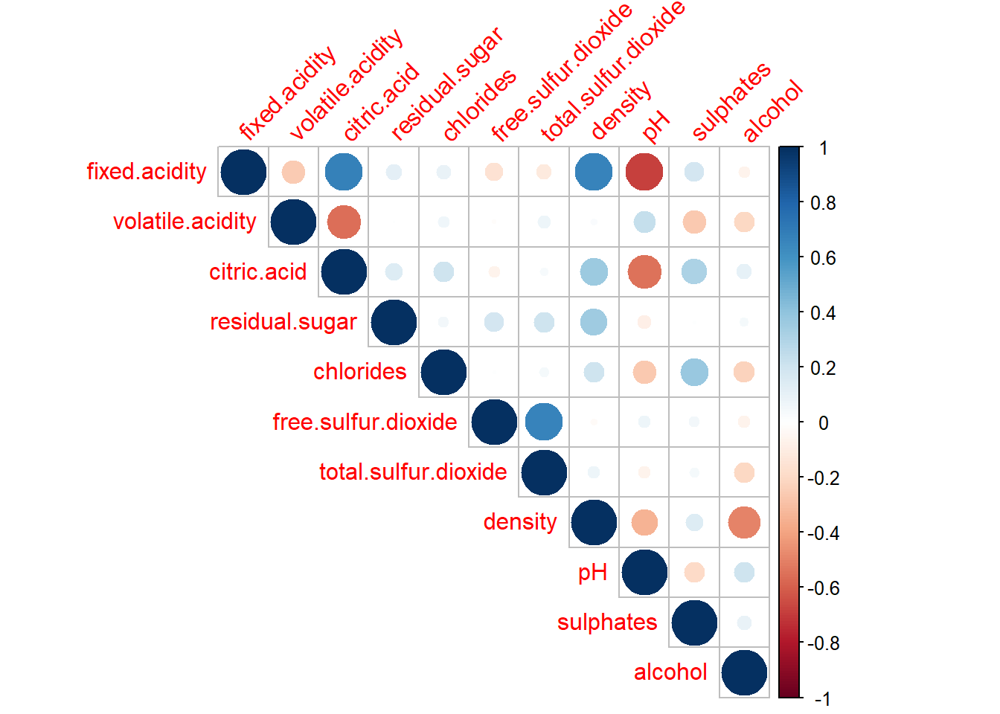
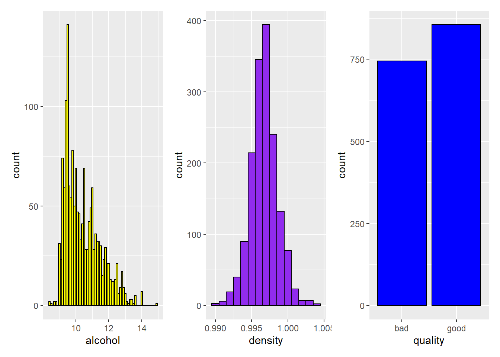
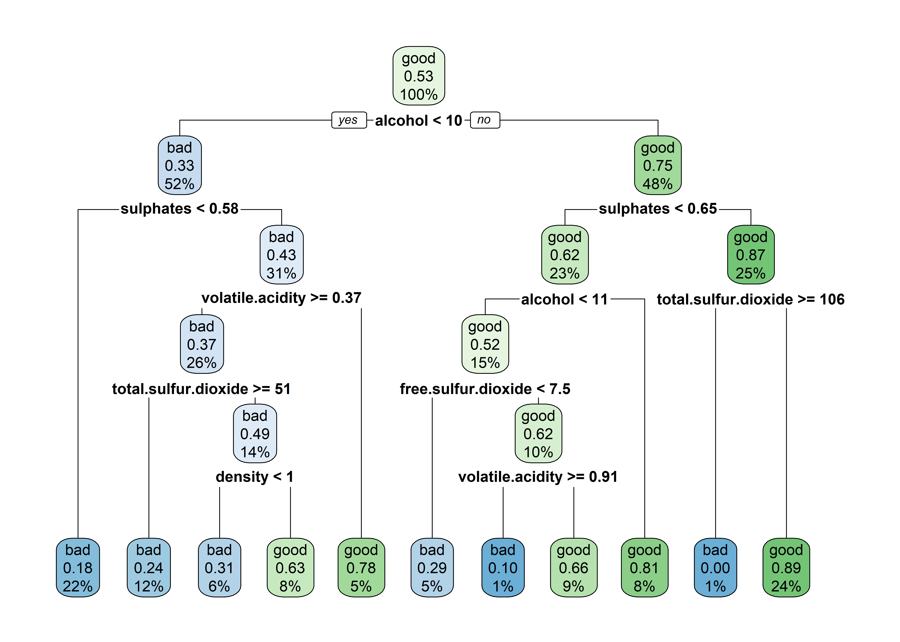

UFSCar - Universidade Federal de São Carlos
ACIEPE - Introdução à Ciência de Dados Usando R
Aluna: Ariane Hayana Thomé de Farias
Prof. Dr. Anderson C. Carniel
Entregue em: 29/04/2022

Avaliação 2
Para resolver os exercícios da Avaliação 2, utilize o conjunto de dados disponibilizado. Ele armazena a classificação da qualidade de vinhos e foi obtido em:
https://www.kaggle.com/datasets/nareshbhat/wine-quality-binary-classification.
De maneira breve, suas colunas são:
1 - fixed acidity
2 - volatile acidity
3 - citric acid
4 - residual sugar
5 - chlorides
6 - free sulfur dioxide
7 - total sulfur dioxide
8 - density
9 - pH
10 - sulphates
11 - alcohol
12 - quality (‘good’ ou ‘bad’, sendo essa coluna a que determina a qualidade do vinho com base nos outros atributos obtidos por sensores)
Note que as colunas 1 até a 11, são atributos numéricos e contínuos, enquanto a coluna 12 é uma coluna categórica com um domínio de 2 valores.
Q1 (valendo 3 pontos) Considerando o conjunto de dados da prova, identifique 2 atributos numéricos que estejam linearmente correlacionados. Justifique sua resposta usando pelo menos 2 meios diferentes para mostrar a correlação.
R = Utilizando o pacote corrplot é possível identificarmos as correlações (ou não) das variáveis analisadas. Assim, para ilustrar, os resultados obtidos foram:
dados <- read.csv("dados/wine.csv")
cor_dados <- cor(dados[1:11])
corrplot(cor_dados,type="upper",tl.srt=45,tl.cex = 1)
Visualmente, quanto maior o círculo, maior a correlação entre as variáveis e quanto mais azul escuro, mais próxima a correlação estará de 1 (correlação positiva e forte). O mesmo ocorre caso seja negativa (ou seja, -1): quanto mais vermelho escuro, mais forte será a correlação.
Desta forma, conforme podemos observar, as variáveis density e fixed acidity, bem como pH e fixed acidity são alguns dos pares mais correlacionados.
É possível visualizarmos os gráficos de dispersão das variáveis utilizando o pacote GGally, que permite construir uma matriz de gráficos, conforme apresentado abaixo:
ggpairs(dados,
columns = 1:11,
aes(alpha = 0.5),upper = list(continuous = "points"))
Através do gráfico de dispersão na matriz de plotagem pode-se verificar que este sugere uma correlação linear positiva entre as variáveis density e fixed acidity, bem como uma correlação linear negativa entre as variáveis pH e fixed acidity.
Além disso, podemos identificar, por meio do coeficiente de correlação (r), o grau da correlação:
densityefixed acidity:
dados |>
select(density, fixed.acidity) |>
cor() density fixed.acidity
density 1.0000000 0.6680473
fixed.acidity 0.6680473 1.0000000pHefixed acidity:
dados |>
select(pH, fixed.acidity) |>
cor() pH fixed.acidity
pH 1.0000000 -0.6829782
fixed.acidity -0.6829782 1.0000000Q2 (valendo 3 pontos) Forneça uma visualização gráfica de sua escolha (e.g., gráfico de barra ou linha) que mostre visualmente 3 atributos do conjunto de dados da prova. Dessa forma, sua resposta deve responder as seguintes perguntas:
a) Qual é o objetivo da visualização?
R = Verificar a qualidade dos vinhos, considerando a densidade e a porcentagem de álcool contida nos vinhos.
b) Quais são os atributos escolhidos para isso?
R = quality; density; alcohol.
c) Qual é o código necessário para realizar a visualização desejada?
library(patchwork)
g1 <- ggplot(data = dados, aes(x = alcohol)) +
geom_histogram(binwidth = 0.1, color = 'black',fill = "yellow")
g2 <- ggplot(data = dados, aes(x = density)) +
geom_histogram(binwidth = 0.001, color = 'black',fill = I('purple2'))
g3 <- ggplot(data = dados, aes(x = quality), ) +
geom_histogram(binwidth = 0.1, color = 'black',fill=('blue'),stat="count")
g1 | g2 | g3 
d)Que tipo de conclusão pode-se tirar a partir da visualização?
quality: Podemos observar que a maioria dos vinhos estão classificados com boa qualidade (good);density: Percebe-se um padrão de uma distribuição normal;alcohol: As menores porcentagens de álcool são as que apresentam a maior quantidade no banco de dados.
Q3 (valendo 4 pontos) Elabore um programa que efetua uma classificação binária usando árvore de decisão. Sua árvore de decisão deve retornar se um vinho é “good” ou “bad” considerando os valores dos outros atributos do conjunto de dados (i.e., colunas 1 até a 11). Utilizando o método de validação holdout com 80% dos dados para treino e 20% dos dados para teste, responda de maneira sucinta as seguintes perguntas:
a) Qual é o código necessário para avaliar o desempenho da árvore de decisão usando o holdout?
# Treino e teste
prepare_hold_out <- function(tbl, training_perc) {
tbl_mixed <- tbl[sample(1:nrow(tbl)), ]
nrow <- nrow(tbl_mixed)
nrow_train <- ceiling(training_perc * nrow)
data_trn <- tbl_mixed[1:nrow_train, ]
data_tst <- tbl_mixed[(1+nrow_train):(nrow), ]
# retorna como uma lista nomeada
list(training = data_trn, test = data_tst)
}
set.seed(1)
vinho_split <- prepare_hold_out(dados, 0.8)b) Qual é a ilustração gráfica da árvore obtida?
library(rpart)
# Construímos a árvore de decisão usando o conjunto de treino
tree <- rpart(quality ~., data = vinho_split$training);treen= 1280
node), split, n, loss, yval, (yprob)
* denotes terminal node
1) root 1280 605 good (0.4726562 0.5273438)
2) alcohol< 10.25 670 219 bad (0.6731343 0.3268657)
4) sulphates< 0.575 278 49 bad (0.8237410 0.1762590) *
5) sulphates>=0.575 392 170 bad (0.5663265 0.4336735)
10) volatile.acidity>=0.365 334 125 bad (0.6257485 0.3742515)
20) total.sulfur.dioxide>=50.5 156 37 bad (0.7628205 0.2371795) *
21) total.sulfur.dioxide< 50.5 178 88 bad (0.5056180 0.4943820)
42) density< 0.99716 75 23 bad (0.6933333 0.3066667) *
43) density>=0.99716 103 38 good (0.3689320 0.6310680) *
11) volatile.acidity< 0.365 58 13 good (0.2241379 0.7758621) *
3) alcohol>=10.25 610 154 good (0.2524590 0.7475410)
6) sulphates< 0.645 295 112 good (0.3796610 0.6203390)
12) alcohol< 11.45 190 92 good (0.4842105 0.5157895)
24) free.sulfur.dioxide< 7.5 59 17 bad (0.7118644 0.2881356) *
25) free.sulfur.dioxide>=7.5 131 50 good (0.3816794 0.6183206)
50) volatile.acidity>=0.9125 10 1 bad (0.9000000 0.1000000) *
51) volatile.acidity< 0.9125 121 41 good (0.3388430 0.6611570) *
13) alcohol>=11.45 105 20 good (0.1904762 0.8095238) *
7) sulphates>=0.645 315 42 good (0.1333333 0.8666667)
14) total.sulfur.dioxide>=105.5 8 0 bad (1.0000000 0.0000000) *
15) total.sulfur.dioxide< 105.5 307 34 good (0.1107492 0.8892508) *library(rpart.plot)
rpart.plot(tree)
c) Qual foi o atributo escolhido para ser o nó raiz dessa árvore?
R = alcohol
d) Qual foi a matriz de confusão obtida? Ademais, identifique:
classes_preditas <- predict(tree, vinho_split$test, type = "class")
confusion_matrix <- table(vinho_split$test$quality, classes_preditas)
confusion_matrix classes_preditas
bad good
bad 100 39
good 49 131
- O número de classificações corretas para “good”
R = 131
- O número de classificações corretas para “bad”
R = 100
- O número de falsos positivos
R = 49
- O número de falsos negativos
R = 39